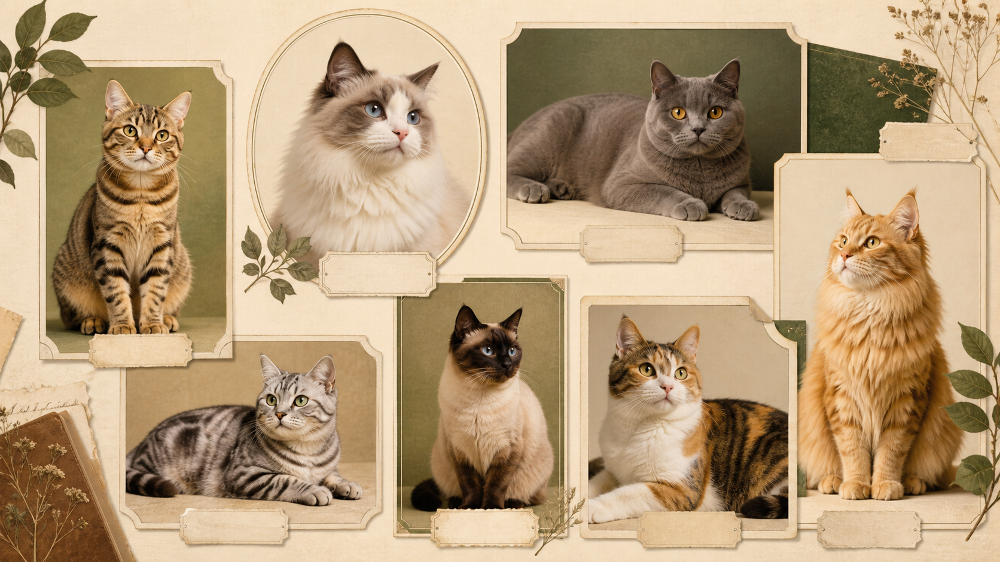

87
在站内可浏览的猫品种数
以图鉴、标签和参与式收藏为主线，把一个猫品种百科改写成适合社群展示与作品沉淀的 HTML deck。

用户真正需要的是快速筛选、比较与收藏，所以模板应该先服务检索，再服务叙事。
在站内可浏览的猫品种数
面向新手 / 进阶 / 收藏向的入口层级
性格、毛型、活跃度、照护难度等横向筛选维度
这页故意做成图鉴卡片，不讲长段落，方便以后扩充到几十张卡。
圆脸、稳定、接受度高，适合新手作为第一波认知入口。
高识别度和温和气质，适合做社群海报与封面角色。
互动性强、辨识度高，适合放在“性格鲜明”分组下。
从百科素材往社群作品集迁移时，可以把“冷门品种”做成更强的收藏驱动力。
豹纹感强、视觉吸引高，适合做高热度展示卡。
体型大、毛量足，适合做“明星品种”或头图角色。
适合放进进阶路线，强调照护门槛与社群讨论价值。
这也是你后面沉淀模板资产时真正能复用的地方。
每张卡固定包含主图、品种名、性格标签、照护等级和一句简介。
按照热门、新手、进阶、毛型、地区等维度拆分类页。
加入成员收藏、活动推荐、打卡记录，让百科变成参与式作品集。
社群型 deck 的价值，不是一次展示，而是为持续更新留出稳定版式。
图鉴卡片型模板原则
“一套好的社群作品集模板，应该让资料越积越多，但页面依然一目了然。”
素材基底：br-choku 猫图鉴场景 + 社群作品集类模板语法